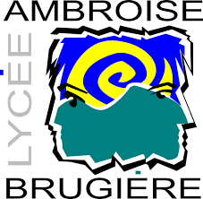
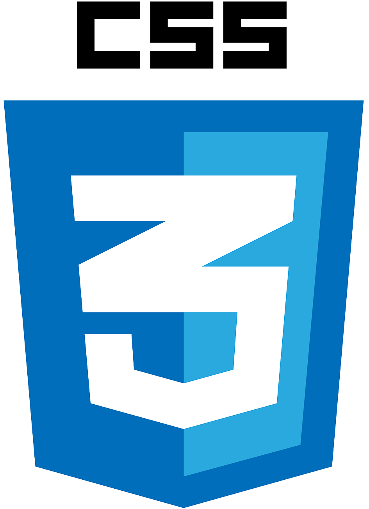
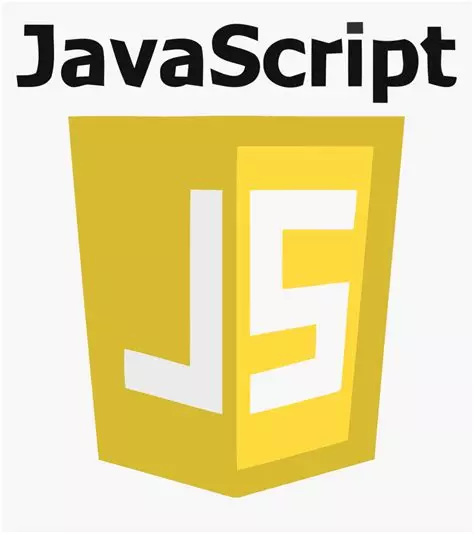
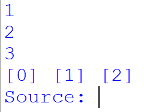
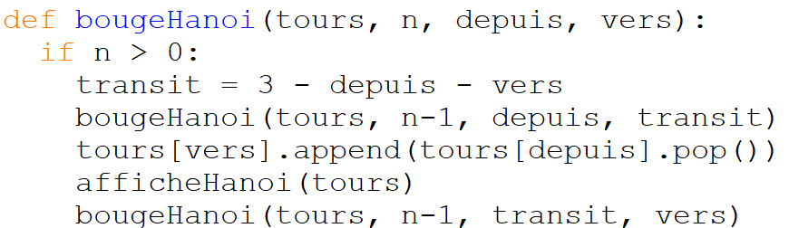

COPEAU Clara
Etudiante de première année de BUT Réseaux et Télécommunications
A propos de moi
Je suis Clara, étudiante de première année en Bachelor Universitaire et Technologique en Réseaux et Télécommunications à Aubière (63). J'ai choisi cette formation pour son côté pratique, mais aussi parce qu'elle offre une spécialisation en cybersécurité, domaine dans lequel je souhaite orienter mon parcours professionnel. Cette formation propose également d'autres aspects tels que la programmation, les réseaux et les télécommunications.
Je suis quelqu'un qui aime apprendre et améliorer les compétences acquises. Si je crée un programme qui fonctionne mais qu'il existe une alternative plus performante, je vais essayer de la trouver. Je suis curieuse, autonome et capable de travailler en équipe, ces compétences étant, pour moi, primordiales pour réussir aussi bien sur le plan professionnel que personnel.
Fort de ces compétences, je vais entammée une alternance dans l'entreprise Clermont Métropole Auvergne à compter de septembre 2024.
Formations
- 2023-2024 : IUT Réseaux et Télecommunications
- 2022-2023 : Baccalauréat Lycée Ambroise Brugière
Étudiante en première année de Réseaux et Télécommunications, cette formation offre des compétences en réseaux et télécommunications, ainsi qu'en cybersécurité à partir de la deuxième année. J'apprécie également le côté pratique de la formation, notamment lors des travaux pratiques.
J'ai suivi une terminale générale au lycée Ambroise Brugière  (63360 Clermont-Ferrand) avec les spécialités Mathématiques et Numérique Sciences de l'Informatique (NSI). Par la suite, j'ai obtenu mon Baccalauréat. J'ai choisi ces spécialités car j'étais fortement intéressée par l'informatique, notamment pour la partie Web et la programmation. Les mathématiques, quant à elles, étaient plutôt motivées par la partie probabilité.
Expériences profesionnelles
Aide aux devoirs Solidarité populaire, Clermont-Ferrand, depuis juin 2020 à juin 2024
J'ai eu l'opportunité d'effectuer du bénévolat, notamment du soutien scolaire allant des élèves de primaires jusqu'aux élèves de lycée. Je devais aider à la compréhension des devoirs, apporter un soutien scolaire sur toutes les matières, en mettant l'accent sur les matières scientifiques pour les élèves de collèges et lycée. Les horaires peuvent varier, mais elles concernent majoritairement le week-end, mardi et le jeudi soir. Cette expérience m'a permis de développer mon sens des responsabilités et ma pédagogie.

Cordée de la réussite Lycée Gergovie, Clermont-Ferrand, février 2024
J'ai eu l'opportunité de faire partie du jury lors des soutenances des Cordées de la Réussite, un programme visant à favoriser l'égalité des chances. Durant cette journée, j'ai assisté aux présentations des élèves de ce lycée concernant leur stage. Nous étions par petits groupes de trois, et nous devions donner des conseils et des pistes d'amélioration aux élèves pour les aider à réussir leurs présentations de fin d'année.
Serveuse You, Clermont-Ferrand De août à novembre 2023
Dans le cadre d'un travail étudiant, j'ai occupé le poste de serveuse au restaurant You à Clermont-Ferrand. J'ai dû m'occuper du service à table, de la prise de commandes et de la gestion des stocks. Suite aux services à forte affluence, j'ai développé certaines compétences telles que la gestion du stress, la polyvalence et l'autonomie.
Compétences techniques
Réseaux :
Lors de ma formation, j'ai pu acquérir des compétences en Réseaux. En effet, lors de TP j'ai pu mettre en place mes connaissances. J'ai pu configurer des éléments informatiques tels que des points d'accès wifi, des routeurs et des switchs. Durant l'un de ces Tps, j'ai pu mettre en place un réseau contenant deux Pcs, un routeur et un switch. Ce qui m'a permis de découvrir l'adressage IPv6, d'en connaître les limites et les avantages. Grâce à cette configuration les communications au sein de mon réseau étaient possibles. Je sais donc créer des réseaux et sous réseaux en configurant différents éléments informatiques.
Programmation Web :
En programmation Web, j'ai pu utiliser plusieurs langages comme python, JavaScript, PHP, HTML et CSS. Lors d'un
projet je devais mettre en place un service de ticket en JS, n'ayant aucune base dans ce langage j'ai du comprendre
les parties de code fournies et savoir poser des questions afin de me débloquer. Il fallait faire un script
d'authentification afin que l'on puisse s'identifier ou s'inscrire afin de créer son ticket. Le projet fut réussi dans
son intégralité.
Télécommunications :
J'ai développé des compétences dans le domaine des télécommunications. J'ai pu lors d'un TP découvrir les chaînes de distribution TV et mesurer les caractéristiques du filtre. J'ai pu voir le spectre des canaux et les interpréter. Malgré les difficultés liées aux matériels défectueux, j'ai pu apprendre qu'il faut manipuler avec précaution le matériel et à reconstruire un câble endommagé. Je sais désormais analyser, interpréter un signal mais aussi l'approximer à l'aide de calculs.
Téléphonie :
En téléphonie, j'ai pu apprendre à configurer des téléphone IP et des serveurs d'appel ainsi que la configuration de softphone. Je sais configurer des Trunk SIP ainsi que le service de messagerie. Je sais donc mettre en place un service téléphonique contenant des groupes d'appels, la redirection de message.
Linguistiques :
- Anglais : niveau B2
- Espagnol : niveau B1+
Qualités
-
Gestion du stress :
Suite à mes expériences professionnelles, notamment dans la restauration j'ai pu apprendre à gérer mon stress. Notamment lors d'une période de rush où le restaurant était plein et où il fallait prendre les choses en main afin de calmer le jeu et pouvoir faire un service convenable.
-
Etat d'esprit d'équipe :
Etant hanballeuse, l'esprit d'équipe est au coeur de mon sport.La communication efficace et le soutien mutuel sont essentiels, permettant de s'adapter rapidement et de réagir en synchronisation pendant les matchs. Cet esprit d'équipe favorise l'aboutissement d'un projet.
-
Patience :
Au cours de mon bénévolat, j'ai régulièrement été confronté à des situations où la patience était cruciale. Lors des séances d'aide aux devoirs, il fallait aider à la compréhension des exercices ; pour cela, je devais parfois expliquer plusieurs fois de différentes manières jusqu'à ce que la consigne soit comprise. Travaillant parfois avec des enfants de primaire, il fallait faire preuve de calme et de patience afin d'assurer un bon déroulement de la séance.
Projet
Titre : Portfolio.
Contexte : Projet du BUT réalisé seule.
Objectif : L'objectif principal est de créer une page web claire, lisible et facile d'utilisation. Cette page servira de portfolio pour se présenter à de futurs employeurs, tout en facilitant l'accès à des informations clés. Il faut donc acquérir des compétences en langages HTML, CSS et JavaScript.
Missions : Pour ce projet, j'ai dû tout d'abord créer une page, pour cela, je devais décider de la mise en forme. Dès cette étape fini, j'ai dû créer la structure de la page en définissant la navigation et la disposition du contenus. Pour cela, j'ai utilisé différentes balises, pour créer la page, telles que la balise "nav" qui servira à naviguer sur le site de façon intuitive, les balises "img" qui permettent d'insérer des images et les balises "p" pour insérer du texte. Il ne reste plus qu'à définir le contenu.
Résultat : A la fin de ce projet, j'ai acquis des compétences en programmation web. En effet, j'ai réussi en autodidacte à déterminer mes erreurs et les résoudre. Ce processus m'a permis d'optimiser l'interface utilisateur et d'améliorer la fonctionnalité d'une page Web, renforçant ainsi mes compétences en programmation Web de manière significative.
 Titre : Tour d'Hanoï en python.
Contexte : Projet du BUT réalisé seule.
Objectif : Ce projet consiste à implémenter diverses fonctions pour résoudre le jeu des tours de Hanoï.
Missions : Pour résoudre le jeu, il fallait développer un programme en Python divisé en quatre parties. Tout d'abord, j'ai initié les tours d'Hanoï de manière graphique avec des symboles. Puis je les ai affichées en représentant les piquets des tours vides. Enfin, il suffit de jouer en respectant les règles pour le résoudre.
Résultat : A la fin de ce projet, j'ai acquis des compétences en programmation Python. En effet, j'ai réussi en autodidacte à déterminer mes erreurs et les résoudre.
 Divers
Lecture :
La lecture est pour moi bien plus qu'une simple activité ; c'est une aventure
sans fin, une porte ouverte vers l'infini. Chaque mot, chaque phrase, chaque
chapitre est une invitation à plonger dans un univers différent, à rencontrer
des personnages fascinants et à vivre des histoires captivantes.
Mon genre littéraire s'oriente souvent vers les romances mais j'apprécie aussi
les thrillers où le suspense me tient en haleine jusqu'à la dernière page.
Voici quelques titres que j'ai aimés:
Handball :
En 2019, avec mon équipe de La Réunion, nous avons réussi à être premières de l'île en
minimes filles et avons été sélectionnées pour le championnat de France. Ce fut une expérience
extraordinaire qui m'a permis de m'améliorer et de rencontrer de nouvelles personnes qui
partagent la même passion.
Contact
N'hésitez pas à me conctater via :

Mail : clara.copeau@etu.uca.fr

Tél. : 07 83 88 01 20